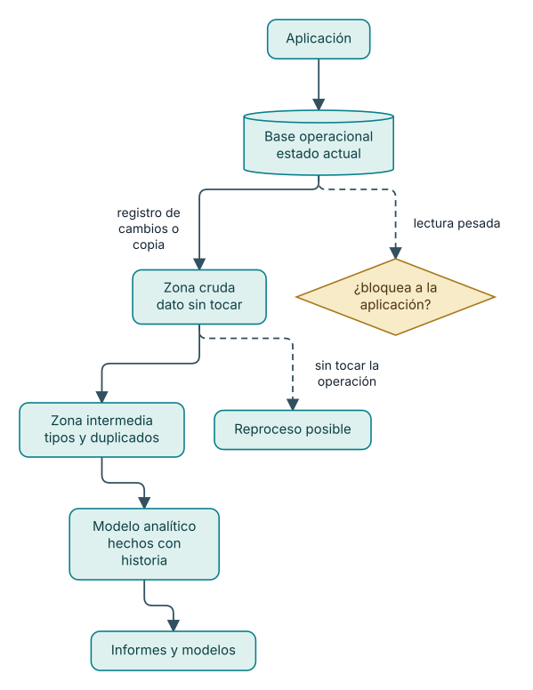
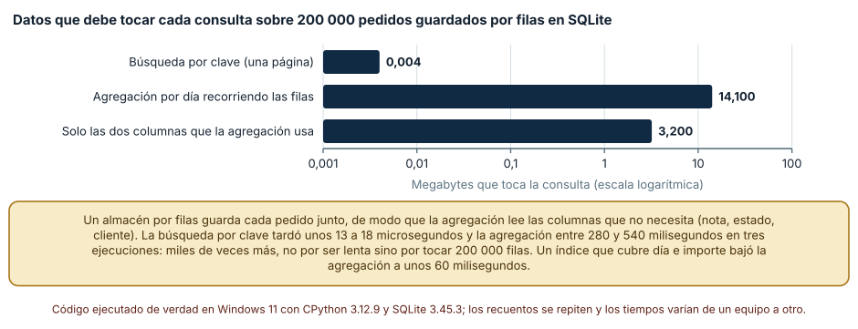
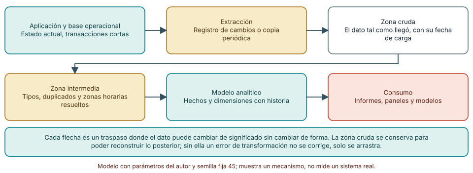
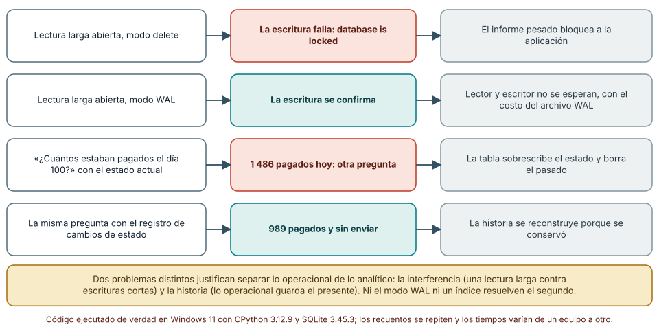

← SE-360 — Proyecto: capa de datos recuperable · ↑ Parte 30 · 📚 Índice completo · 🌐 Portal · SE-362 — Ingesta batch y streaming →
Punto profesional y fundamento pedagógico
Punto profesional. La clase existe para que decidas cuándo y cómo sacar datos de la base que sirve a la aplicación y llevarlos a un lugar pensado para responder preguntas, y para que sepas por qué esa decisión no es solo «copiar tablas». Un sistema operacional está optimizado para escribir y leer pocas filas con rapidez y guarda el estado presente; un sistema analítico está optimizado para recorrer muchas filas de pocas columnas y necesita la historia. Cuando se mezclan, aparecen dos fallos que se confunden con «lentitud»: un informe pesado que bloquea a la aplicación y una pregunta sobre el pasado que la base ya no puede responder porque sobrescribió la respuesta. La clase los mide sobre una base real de SQLite y muestra qué cambia cuando se separan.
Por qué aparece aquí. Abre la parte porque todas las clases siguientes (ingesta, modelado, calidad, contratos) suponen que ya existe una frontera entre lo operacional y lo analítico. Reutiliza lo que ya sabes de índices y patrones de acceso en SE-353 y de ciclo de vida del dato en SE-358, y retoma la extracción por captura de cambios de SE-378 desde la pregunta de qué se hace con lo extraído.
Error conceptual que debe corregir. Creer que lo analítico es «lo mismo pero más grande», de modo que basta un índice más o una réplica. Un índice acelera la agregación, pero no devuelve el estado de ayer; una réplica evita el bloqueo, pero conserva el mismo modelo de estado presente. La separación resuelve dos problemas distintos (interferencia e historia) y trae un tercero (significado: cada traspaso puede cambiar lo que una columna quiere decir).
Secuencia de aprendizaje. Antes de ejecutar, predices cuántas veces más datos toca una agregación por día que una búsqueda por clave y si una lectura larga puede bloquear una escritura. Después ejecutas las consultas sobre 200 000 pedidos, abres una lectura larga con dos modos de diario de SQLite y reconstruyes con un registro de eventos una pregunta que la tabla de estado no puede responder.
Evidencia de aprendizaje. del-operacional-al-analitico.md con las cinco preguntas analíticas más frecuentes de un sistema tuyo, el patrón de acceso de cada una, qué columnas necesita, si requiere historia y qué fuente de verdad la responde hoy; más la lista de lo que cambia de significado en cada traspaso.
Límite de la conclusión. Los 200 000 pedidos son sintéticos y viven en SQLite en memoria o en un archivo temporal; los tiempos se midieron en un equipo de escritorio y varían entre ejecuciones (la agregación tardó entre 280 y 540 ms en tres corridas). La comparación por filas y por columnas mide bytes que debe tocar cada consulta, no el rendimiento de ningún almacén analítico. No se midió ninguna base de producción ni se invocó ningún modelo de lenguaje.
Trazabilidad fuente → afirmación
| Fuente primaria u oficial | Afirmación que respalda | Lo que no prueba |
|---|---|---|
| Kleppmann, «Designing Data-Intensive Applications» | Distingue el procesamiento de transacciones del procesamiento analítico por su patrón de acceso y describe el almacenamiento orientado a columnas. | Es un libro de referencia; no mide tu sistema. |
| SQLite, «Write-Ahead Logging» | Documenta que con el registro anticipado los lectores no bloquean a los escritores y los escritores no bloquean a los lectores. | No describe otros motores. |
| Kimball Group, «Dimensional Modeling Techniques» | Presenta el modelado dimensional como la organización de datos para consulta analítica, con historia. | No dice cuándo conviene frente a otros modelos. |
| Fowler, «Data Lake» | Describe la zona cruda que conserva el dato sin transformar y advierte de su riesgo si no tiene curaduría. | No cuantifica el riesgo. |
Python: sqlite3 | Documenta el módulo con el que se ejecuta el laboratorio. | No valida los resultados. |
Antes de empezar
Recupera lo aprendido en SE-353: un índice se elige por el patrón de acceso. La pregunta activa es: ¿cuál es el informe más pesado de tu sistema, quién lo ejecuta, a qué hora y qué le ocurre a la aplicación mientras corre?
Prerrequisitos
- Haber completado la Parte 29, en especial SE-349 (modelado), SE-351 (transacciones y aislamiento) y SE-353 (índices).
- Conocer la idea de captura de cambios de SE-378.
- Saber escribir
SELECT,GROUP BYyJOINen SQL. - Python 3.11 o posterior; el laboratorio usa
sqlite3de la biblioteca estándar.
Problema auténtico
*Avisos* guarda cada aviso, cada entrega y cada lectura en su base operacional. Hasta ahora las preguntas eran del tipo «¿se leyó este aviso?»: una fila, por clave, en microsegundos. Un día finanzas pide «¿cuántos avisos estaban pendientes de lectura al cierre de cada mes del año pasado?» y producto pide «¿qué porcentaje de avisos se lee en la primera hora, por curso?». La primera pregunta no se puede responder: la tabla guarda el estado de hoy y cada actualización borró el anterior. La segunda sí se puede, pero el informe recorre doscientos mil registros y, mientras corre, las escrituras de la aplicación empiezan a fallar con «base de datos bloqueada».
El equipo propone «un índice y una réplica». Hace falta saber qué problema resuelve cada cosa antes de gastar: el índice acelera la segunda pregunta, la réplica evita el bloqueo, y ninguna de las dos devuelve el pasado.
Objetivos observables
Al terminar podrás:
- clasificar una consulta como operacional o analítica por su patrón de acceso (filas tocadas, columnas usadas, necesidad de historia) y no por su nombre;
- medir con un plan de consulta y una cuenta de bytes cuánto más datos toca una agregación que una búsqueda por clave y cuánto de eso es lectura inútil;
- demostrar, con una lectura larga abierta, cuándo una escritura se bloquea y cuándo no, y explicar el costo del modo que no bloquea;
- reconstruir una pregunta sobre el pasado con un registro de cambios de estado y mostrar por qué la tabla de estado actual no puede responderla;
- describir las capas cruda, intermedia y analítica, qué se conserva en cada una y qué puede cambiar de significado en cada traspaso.
Mapa conceptual

El mapa separa dos caminos. La línea punteada hacia la operación es el problema de interferencia; el camino hacia la zona cruda es el que permite reprocesar cuando una transformación se equivoca, porque el dato original sigue allí.
Temas y por qué importan
| Tema | Por qué cambia una decisión profesional | Evidencia mínima |
|---|---|---|
| Patrón de acceso | Decide qué estructura física sirve a la consulta. | Filas y columnas que toca cada consulta |
| Almacenamiento por filas y por columnas | Una agregación lee lo que no necesita si el dato está por filas. | Bytes tocados frente a bytes necesarios |
| Interferencia | Una lectura larga puede bloquear escrituras. | Prueba con una lectura abierta y una escritura |
| Estado frente a historia | Sobrescribir borra el pasado. | Pregunta sobre el pasado respondida con eventos |
| Extracción | Una copia periódica y un registro de cambios ven cosas distintas. | Qué cambios intermedios ve cada una |
| Capas | La zona cruda permite corregir lo posterior. | Reproceso desde la zona cruda |
| Cuándo no separar | Con poco volumen una réplica basta y la separación es costo puro. | Volumen, frecuencia y plazo de la pregunta |
Conceptos y decisiones
1. El patrón de acceso define el tipo de carga
Una consulta operacional toca pocas filas, casi siempre por clave, con todas o casi todas sus columnas y debe responder en milisegundos: «dame el pedido 4821». Una consulta analítica toca muchas filas y pocas columnas, y su valor está en el agregado: «suma el importe por día del año». La diferencia no está en el motor de base de datos sino en cuántas filas y columnas recorre. En el laboratorio, con 200 000 pedidos, la búsqueda por clave tardó entre 12 y 18 microsegundos y tocó una página de 4 096 bytes; la agregación por día recorrió las 200 000 filas y tardó entre 280 y 540 milisegundos, es decir, miles de veces más. Esa proporción no es un defecto de SQLite: es el trabajo de recorrer dos mil veces más filas.
2. Filas y columnas: cuánta lectura es inútil
Un almacén por filas guarda cada pedido contiguo: identificador, cliente, día, importe, estado y nota. La agregación por día necesita solo day e amount. La tabla del laboratorio ocupó 14,1 MB en 3 433 páginas; las dos columnas que necesita la agregación, a ocho bytes por valor, suman 3,2 MB, un 22,8 % de la tabla. El resto es lectura inútil, porque para llegar a las dos columnas hay que atravesar las demás. Un índice que cubre day e amount convierte el recorrido en un recorrido del índice (el plan lo declara: SCAN orders USING COVERING INDEX) y bajó la consulta a unos 60 ms. Un formato por columnas lleva la misma idea más lejos al guardar cada columna aparte; la clase SE-368 lo mide con archivos.
3. La interferencia es un problema de diseño del acceso, no de hardware
En SQLite, con el diario de reversión por defecto (delete), una lectura que sigue abierta impide que otra conexión confirme una escritura: la escritura falla con database is locked. Con el registro anticipado (WAL), la misma escritura se confirma mientras la lectura sigue abierta, porque el lector trabaja sobre una instantánea y el escritor añade al registro. El laboratorio abre un cursor sin terminar de leerlo, intenta escribir con tiempo de espera cero y registra el resultado: bloqueo en el primer modo y confirmación en el segundo. Un motor cliente-servidor tiene mecanismos distintos (versiones de filas, bloqueos de varias granularidades), pero la pregunta es la misma: ¿qué le hace una lectura de media hora a las escrituras de ese medio? El modo WAL no es gratis: añade un archivo, exige limpieza periódica y tiene límites en el acceso desde otros equipos.
4. Estado frente a historia
La tabla orders guarda el estado actual de cada pedido. Cuando un pedido pasa de paid a shipped, la fila se actualiza y paid desaparece. La pregunta «¿cuántos pedidos estaban pagados y sin enviar el día 100?» necesita saber qué estado tenía cada pedido ese día. Con 20 000 pedidos y 70 745 cambios de estado, la respuesta correcta, calculada sobre el registro de cambios, fue 989; la tabla de estado actual solo permite contar cuántos están en paid hoy, 1 486, que responde otra pregunta. La corrección no es una consulta mejor sino conservar lo que se perdió: un registro de eventos o filas con vigencia (valid_from, valid_to). Es la razón de que un modelo analítico guarde historia aunque la operación no la necesite.
5. Extraer: copia periódica, consulta incremental y registro de cambios
Hay tres maneras de mover datos fuera de la base operacional, con límites distintos. La copia completa periódica es simple y ve el estado en el instante de la copia: pierde cualquier cambio intermedio entre dos copias y es cara si la tabla es grande. La consulta incremental por marca de tiempo (WHERE updated_at > <última>) mueve solo lo que cambió, pero no ve las filas borradas y depende de que updated_at se actualice siempre y esté indexado. La captura de cambios desde el registro de transacciones (CDC, tratada en SE-378) ve inserciones, actualizaciones y borrados en orden, a costa de operar un componente más y de tratar los cambios de esquema. Esta clase no mide las tres; lo que sí mide es qué se pierde si solo se conserva el estado final, y por eso insiste en que la elección se haga por la pregunta que se quiere responder.
6. Capas: conservar el dato original para poder corregir
La zona cruda guarda el dato como llegó, con su fecha de carga y su origen. La zona intermedia resuelve tipos, zonas horarias, duplicados y nombres. El modelo analítico reorganiza en hechos y dimensiones con la granularidad correcta. La razón de esta cadena no es el orden estético: es que cada transformación puede equivocarse y la corrección exige volver a empezar desde algo que no se haya tocado. Quien transforma al ingerir y descarta el original pierde esa posibilidad. El costo es almacenamiento y la disciplina de tratar la zona cruda como solo de lectura para todos salvo el proceso de ingesta.
7. Cada traspaso puede cambiar el significado
Una columna status = 'delivered' puede significar «el mensajero marcó entregado» en la base operacional y «el cliente confirmó» en el informe de ventas. Las columnas conservan nombre y tipo mientras cambian de sentido. Hay tres puntos donde ocurre: la extracción (qué filas entran, cuáles se omiten), la transformación (cómo se redondea, qué zona horaria se aplica, qué se descarta) y el consumo (cuál es la definición de «activo»). La defensa es escribir la definición junto con la columna, con un ejemplo, y comprobarla; las clases siguientes dan las herramientas (SE-365, SE-366).
8. Cuándo no separar
Un sistema con pocos miles de filas, preguntas poco frecuentes y un equipo que responde a mano no necesita una plataforma de datos. Una réplica de lectura o una vista materializada resuelven la interferencia sin añadir procesos. La separación empieza a compensar cuando se cumplen a la vez tres cosas: el volumen hace que las preguntas analíticas compitan con la operación, la historia se necesita y se está perdiendo, y varias personas o sistemas piden los mismos números. Si solo ocurre una, suele bastar una solución local. Una plataforma que no se usa es un costo que se paga todos los meses.
Bytes que debe tocar cada consulta
La primera medida compara lo que toca una búsqueda por clave con lo que toca una agregación sobre la misma tabla.

Cómo leer la figura. Cada barra es una consulta y su longitud los megabytes que debe tocar, en escala logarítmica porque entre la primera y la segunda hay cuatro órdenes de magnitud. Mira primero la distancia entre las dos últimas barras: la agregación recorre 14,1 MB para usar 3,2 MB. Dónde deja de valer: los tiempos son de un equipo concreto y varían de una corrida a otra; lo que se traslada es la proporción de datos tocados. Con un motor columnar, la lectura inútil de la última barra desaparece, y con muy pocas filas ninguna de las dos consultas importa.
El camino del dato
La segunda figura sitúa las capas y los traspasos.

Cómo leer la figura. Cada caja es una etapa y cada flecha un traspaso donde el dato puede cambiar de significado sin cambiar de forma. Mira primero la zona cruda: es la caja que permite volver a ejecutar las siguientes. Dónde deja de valer: son tres capas del patrón más común; muchas organizaciones añaden otras (una capa por dominio, una capa de servicio) y algunas sistemas, como los de baja latencia, saltan capas. Que haya tres no es una regla.
Lectores, escritores y la pregunta sobre el pasado
La tercera figura reúne los cuatro casos medidos.

Cómo leer la figura. Cada fila es un caso, con su resultado en la caja central y la lección a la derecha. Mira primero las filas de la misma pareja: lo único que cambia entre la primera y la segunda es el modo del diario, y entre la tercera y la cuarta, qué se conservó. Dónde deja de valer: la prueba de bloqueo usa un archivo temporal y un cursor sin terminar; un motor cliente-servidor bloquea de otra manera, y 989 y 1 486 son números de un modelo con estados y fechas aleatorios, no de ningún negocio.
Definiciones de trabajo
- Carga operacional (OLTP): muchas transacciones cortas que leen y escriben pocas filas.
- Carga analítica (OLAP): pocas consultas que recorren muchas filas para agregar.
- Patrón de acceso: filas y columnas que toca una consulta y con qué frecuencia.
- Estado actual: valor presente de una entidad, sin historia.
- Registro de eventos: secuencia ordenada de los cambios, que permite reconstruir cualquier instante.
- Zona cruda: copia del dato tal como llegó, sin transformar.
- Interferencia: efecto de una carga sobre la latencia o el éxito de otra que comparte recursos.
Ejemplo mínimo
Dos conexiones a la misma base: una lectura abierta y una escritura.
import sqlite3, tempfile, os
with tempfile.TemporaryDirectory(ignore_cleanup_errors=True) as tmp:
ruta = os.path.join(tmp, "o.db")
w = sqlite3.connect(ruta, timeout=0, isolation_level=None)
w.execute("PRAGMA journal_mode=delete") # cambiar a «wal» y repetir
w.execute("CREATE TABLE t(a INT)")
w.executemany("INSERT INTO t VALUES(?)", [(i,) for i in range(1000)])
r = sqlite3.connect(ruta, timeout=0, isolation_level=None)
r.execute("BEGIN")
cursor = r.execute("SELECT a FROM t")
cursor.fetchone() # la lectura sigue abierta
try:
w.execute("BEGIN IMMEDIATE")
w.execute("INSERT INTO t VALUES(-1)")
w.execute("COMMIT")
print("la escritura se confirma")
except sqlite3.OperationalError as error:
print("la escritura falla:", error) # database is locked
cursor.close()
r.execute("COMMIT")
r.close(); w.close()En el modo delete imprime la escritura falla: database is locked; con PRAGMA journal_mode=wal imprime la escritura se confirma. Cerrar el cursor antes de salir evita que Windows retenga el archivo y el directorio temporal no se pueda borrar.
Ejemplo profesional
*Escenario ilustrativo: las cifras y los resultados que aparecen en este ejemplo son supuestos de la narración, no mediciones.*
El equipo de *Avisos* recibe tres peticiones de datos en el mismo mes. En lugar de abrir tres informes a medida, dibuja la tabla de preguntas: cada una con las filas que toca, las columnas que usa, si necesita historia y con qué frecuencia se repite. Dos de las tres necesitan historia que la base ya perdió, y una se repite cada hora. Con esa tabla, el equipo propone un piloto acotado: conservar desde hoy los cambios de estado de avisos en una tabla de eventos, copiar cada noche a una zona cruda y construir un solo modelo analítico con granularidad de un aviso por día. No promete responder el pasado ya perdido; lo declara como pérdida irrecuperable y fija desde cuándo habrá respuesta. A las seis semanas compara el tiempo de las tres preguntas y el efecto en la latencia de la aplicación en la hora del informe; si la latencia no cambió y las preguntas se responden sin ayuda del equipo, amplía a otros dominios.
Práctica guiada
- Lista las cinco consultas más pesadas de un sistema que conozcas y anota para cada una filas tocadas, columnas usadas y si necesita historia.
- Ejecuta
python scripts/experiments_part30_a.py 541y compara el tiempo de la búsqueda por clave con el de la agregación; anota cuántos megabytes toca cada una. - Cambia el diario a
walen el ejemplo mínimo y repite la prueba de bloqueo. - Escribe la consulta que responde «¿qué estado tenía el pedido X el día D?» sobre una tabla de eventos con
(order_id, status, day). - Para una columna de tu sistema, escribe qué significa en la base operacional y qué le hace creer un informe que significa.
Ejercicios
- Básico. Explica por qué un índice sobre
(day, amount)acelera la agregación y por qué no responde la pregunta sobre el pasado. - Intermedio. Añade una columna
notede 400 bytes a la tabla del experimento y calcula de nuevo cuánto de la tabla es lectura inútil para la agregación. - Avanzado. Diseña la tabla de eventos de un dominio tuyo para que se pueda reconstruir el estado a cualquier fecha, incluyendo borrados, y di qué decisión te falta si hay datos personales que deben poder borrarse.
Reto verificable
Entrega del-operacional-al-analitico.md con la tabla de cinco preguntas, el patrón de acceso de cada una, la respuesta a si necesita historia, la fuente de verdad que la responde hoy y la lista de lo que cambia de significado en cada traspaso. Es válido si otra persona clasifica las cinco preguntas igual que tú a partir de la tabla y puede reproducir una de las medidas con la consulta que anotaste.
Caso conductor
*Avisos* decide qué preguntas son analíticas y deja de contestarlas desde su base operacional. SE-362 trata cómo llegan los datos a la zona cruda: por lotes o en flujo, y qué se pierde con cada elección.
Preguntas frecuentes
¿Una réplica de lectura reemplaza a una plataforma de datos?
Resuelve la interferencia y no la historia ni la forma. Para volúmenes pequeños y preguntas sobre el presente, basta; para preguntas sobre el pasado o agregados sobre años, la réplica sigue guardando solo el estado actual y recorriendo filas completas.
¿Por qué no hacer el análisis directamente en la base operacional con un índice?
A veces es correcto. Si las preguntas son pocas, la tabla pequeña y no hay historia que conservar, un índice cubierto resuelve el caso. La separación se justifica cuando las cargas compiten, cuando se pierde historia o cuando muchos consumidores necesitan lo mismo.
¿Cuánta historia conservar?
La que responda las preguntas que alguien va a hacer y que la regulación permita. Conservar todo siempre es un costo y un riesgo de privacidad; SE-369 trata la retención.
¿Es mejor copiar todo cada noche o capturar los cambios?
Depende de lo que debas ver. La copia completa es simple y pierde lo intermedio; la captura de cambios ve todo y cuesta operar un componente. Si la pregunta es «¿cómo estaba el día D?», con una copia por día basta; si es «¿qué pasó entre las 10 y las 11?», no.
Fallo controlado y diagnóstico
Fallo. Cada lunes a las 9:00 los administradores reportan que la aplicación «se pone lenta» y algunas confirmaciones de lectura fallan. Nadie despliega nada a esa hora.
Diagnóstico paso a paso. (1) Se alinea el horario de los errores con los registros de consultas largas: a las 9:00 arranca un informe semanal que recorre toda la tabla de entregas. (2) Se mide el informe aislado: recorre el 100 % de las filas y su plan es un recorrido completo. (3) Se prueba el efecto sobre la escritura con una lectura abierta: con el diario por defecto, las escrituras fallan con bloqueo. (4) Se descarta la hipótesis de «falta de CPU»: la CPU no pasa del 40 % mientras fallan las escrituras.
Corrección. Se cambia el modo de diario a WAL en la base operacional, se mueve el informe a una copia nocturna en la zona cruda y se añade al contrato del informe que no puede apuntar a la base operacional. Se verifica con la misma prueba de lectura abierta y escritura. La lección es que la lentitud tenía un mecanismo concreto (un bloqueo) que una métrica de CPU no veía.
Errores comunes y cómo corregirlos
- Tratar «analítico» como «grande». Se clasifica por patrón de acceso. Corrige midiendo filas y columnas tocadas.
- Resolver la historia con un índice. Un índice acelera, no recuerda. Corrige conservando eventos o vigencias.
- Ejecutar informes contra la base operacional. Corrige con una copia, una réplica o una zona cruda, y con un contrato que lo prohíba.
- Transformar al ingerir y descartar el original. Corrige conservando la zona cruda como solo de lectura.
- Copiar tablas sin su significado. Corrige escribiendo la definición con un ejemplo junto a cada columna.
- Crear una plataforma por si acaso. Corrige con la tabla de preguntas y el criterio de las tres condiciones.
Entorno y archivos clave
scripts/experiments_part30_a.py: funcióne541con las consultas por clave y de agregación, el plan del índice, la reconstrucción con eventos y la prueba de bloqueo; se ejecuta conpython scripts/experiments_part30_a.py 541.scripts/experiments_part30_lab.py: utilidades de medición y formato.scripts/figures_part30_a.py: las tres figuras de la clase.- Solo la biblioteca estándar de Python 3.11 o posterior y SQLite incluido en ella. Los datos se generan con semilla 45; el experimento tarda unos segundos y los tiempos varían.
Seguridad, ética y accesibilidad
Los datos del laboratorio son sintéticos. Una zona cruda real contiene todo lo que había en la base operacional, incluidos datos personales: copiar es multiplicar la superficie de acceso, y cada copia debe tener dueño, control de acceso y retención (SE-369). Ética: una pregunta analítica puede revelar a una persona aunque cada dato por separado sea inocuo; decide quién puede preguntar qué. Las figuras llevan texto alternativo completo y no dependen solo del color.
Puente hacia el trabajo con agentes
Un agente que responde preguntas de negocio sobre datos necesita saber si consulta el presente o el pasado y desde qué capa. Exige que declare la tabla que usó, su capa y su fecha de corte, y que no ejecute consultas pesadas contra la base operacional. Si un agente propone «copiar la tabla de producción a un cuaderno», trátalo como una petición de acceso a datos personales y no como una consulta.
Transferencia
Elige un informe que tu organización ejecute a mano. Mide cuántas filas y columnas toca, cuánto tarda, qué le hace a la operación mientras corre y si alguna vez necesitó un estado pasado que ya no existía. Con esos cuatro datos decide si hace falta una copia, una réplica, historia o nada.
Evaluación y evidencia
| Criterio | Evidencia aceptable | Rechazo |
|---|---|---|
| Clasificación | Filas, columnas e historia por consulta | «Es un informe grande» |
| Medida | Plan de consulta y bytes tocados | Solo «tarda mucho» |
| Interferencia | Prueba con lectura abierta y escritura | Suponer que no hay bloqueo |
| Historia | Pregunta sobre el pasado respondida con eventos | «La base ya lo tiene» |
| Significado | Definición con ejemplo por columna | Solo nombre y tipo |
Fuentes
- Kleppmann, M. «Designing Data-Intensive Applications».
- SQLite. «Write-Ahead Logging».
- Kimball Group. «Dimensional Modeling Techniques».
- Fowler, M. «Data Lake».
- Python Software Foundation.
sqlite3.
Límites y siguiente paso
Las 200 000 filas y los 20 000 pedidos son sintéticos, los tiempos varían entre ejecuciones y el modelo de estados con fechas aleatorias no representa ningún negocio. No se midió ningún almacén analítico, ninguna herramienta de captura de cambios ni la base de ningún equipo; el efecto de WAL se probó en SQLite, no en un motor cliente-servidor. El siguiente paso, SE-362, estudia cómo entran los datos a la zona cruda: por lotes o en flujo, con retrasos, duplicados y fallos a mitad.
Glosario
| Término | Definición breve |
|---|---|
| Patrón de acceso | Filas y columnas que toca una consulta |
| OLTP y OLAP | Carga transaccional y carga analítica |
| WAL | Registro anticipado que separa lectores y escritores |
| Zona cruda | Dato como llegó, sin transformar |
| Registro de eventos | Secuencia de cambios que permite reconstruir el pasado |
| Interferencia | Una carga que degrada a otra |
← SE-360 — Proyecto: capa de datos recuperable · ↑ Parte 30 · 📚 Índice completo · 🌐 Portal · SE-362 — Ingesta batch y streaming →